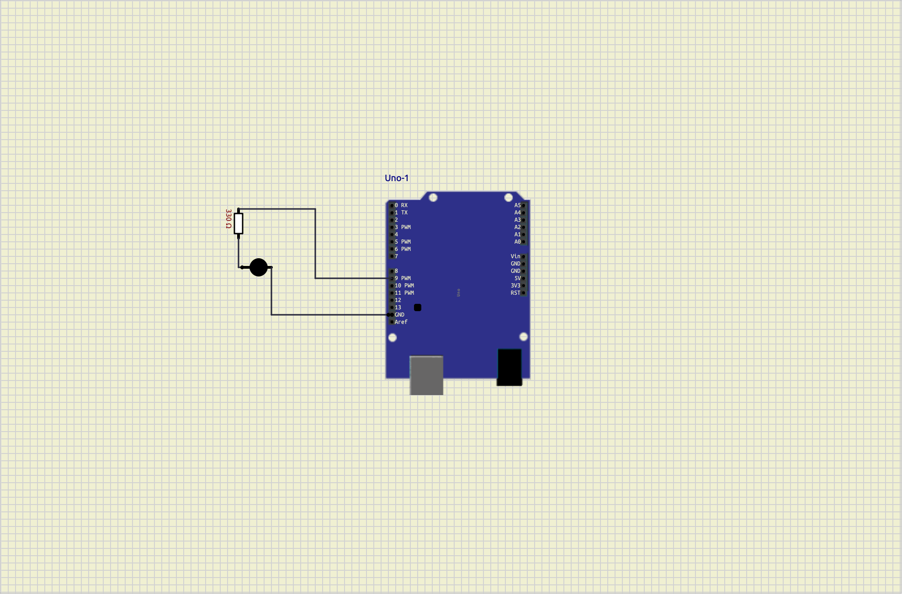
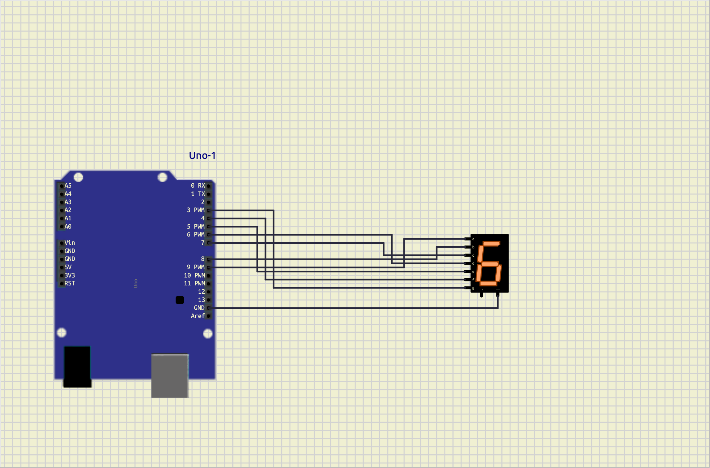
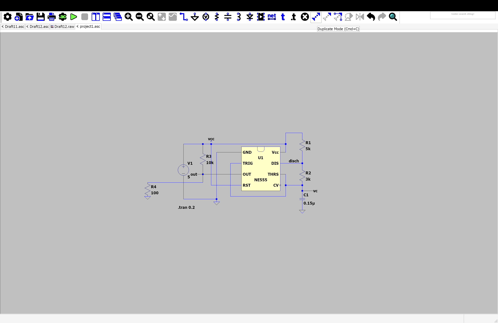
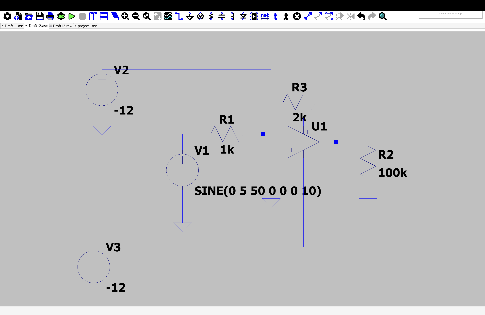
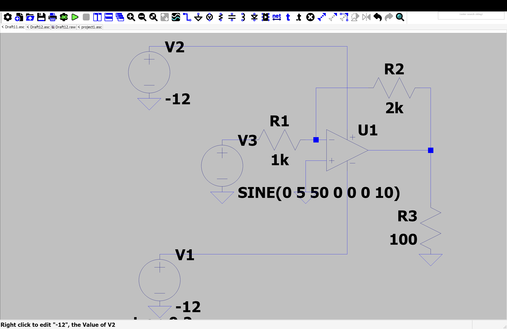
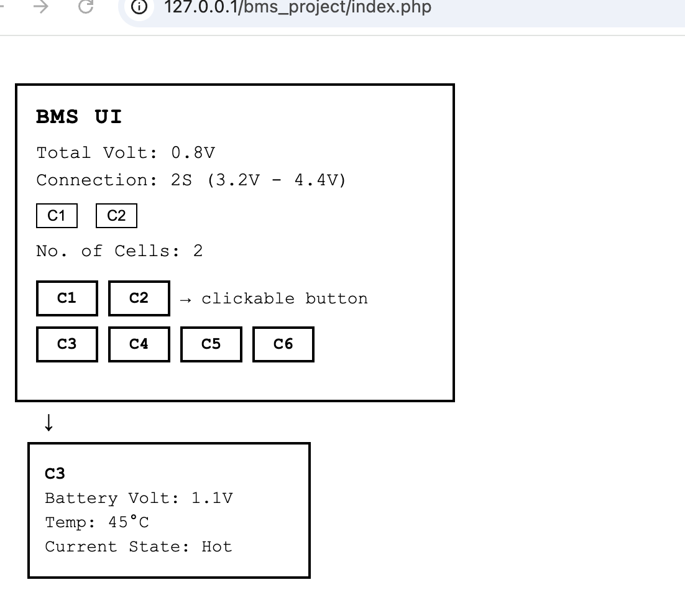

##2026_GIPEDI_KARUNA_SHARMA
1.1 ARDUINO UNO BOARD 1.2 ARDUINO IDE INTERFACE 1.3 CIRCUIT DIAGRAM OF ARDUINO SETUP 2.1 SEVEN SEGEMENT LED INTERFACING CIRCUIT 2.2 COUNTER OUTPUT ON SEVEN SEGMENT DISPLAY 3.1 LED MATRIX INTERFACING CIRCUIT
learn the components of an arduino uno circuit .
understand how to connect basic electronic components.
write and upload a simple arduino program .
verify the circuit through simulation .

#include <const int ledPin = 9; // The digital pin connected to the LED Anode
void setup() {
// Initialize digital pin 13 as an output.
pinMode(ledPin, OUTPUT);
}
void loop() {
digitalWrite(ledPin, HIGH); // Turn the LED on
delay(1000); // Wait for 1 second (1000 milliseconds)
digitalWrite(ledPin, LOW); // Turn the LED off
delay(1000); // Wait for 1 second
}
>
The program turns the LED ON for one second and OFFfor one second repeatedly creating a blinking effect.
Learned how to connect an LEDto arduino uno write a basic arduino program, and upload code to the board.
1.Problem:LED did not blink . 2.solution:checked wiring connections and upload the code again.
Tis experiment can be extended to control multiple LEDs and other electronic components.
INTERFACING WITH SEVEN SEGMENT LED TO MAKE A COUNTER USING A PUSH BUTTON AS INPUT
To interface a seven segment LEDdisplay with Arduino and use a push button to incrementband display a counter value.
A seven segment display consists of seven LEDS arranged in the shape of the number 8.by turning ON and OFF specific segments ,digits from 0 to 9 can be displayed.Apush button is used as an input device. each time the button is pressed, the counter value increases by one and the updated number is displayed on the seven -segment display.

## include <sevseg.h>
void setup (){
//put your setup code here ,to run once :
byte numdigits =1;
byte digit _pins []={};
byte seg_pins []={9,8,7,6,5,4,3,2};
byte dis_type =COMMON_CATHODE;
bool res_on_segs=true;
s_seg.begin (dis_type,numdigit _pins ,seg_pins ,res_on_segs );
s_seg.setbrightness(90);
}
void loop(){
//put your main code here to run repeated:
for (int i=0 ;i<10; i++)
{
s_seg.setnumber(i);
s_seg.refreshdisplay ();
delay(1000);
}
PROBLEM: Incorrect digits displayedon the seven-segment display . SOLUTION: Checked segment pin connections and corrected the writing according to the circuit diagram .
1.Arduino official Documentation 2. seven segment display datasheet 3 .arduino IDEuser guide
To interface an LED matrix arduino and display different patterns ,symbols and designs on the matrix .
An LED matrix is a grid of LED arranged in rows and columns . by controlling the LEDs individually ,different patterns ,symbols ,charavters, and animations can be displayed the arduino sends data to the LEDmatrix to illuminate specific LEDs and create the desired pattern .
int pins[] = {2, 3, 4, 5, 6, 7, 8, 9, 10, 11, 12, 13}; // Added [] here
void setup() {
for (int i = 0; i < 12; i++) {
pinMode(pins[i], OUTPUT); // Fixed capital M and capitalized OUTPUT
}
}
void loop() {
for (int i = 0; i < 12; i++) {
digitalWrite(pins[i], HIGH); // Fixed capital W
}
delay(1000); // Optional: adds a pause while they are ON
for (int i = 0; i < 12; i++) {
digitalWrite(pins[i], LOW); // Fixed capital W and capitalized LOW
}
delay(1000); // Optional: adds a pause while they are OFF
}
pattern was not displayed correctly .
Checked wiring connections and verified the binary pattern data in the coe .
##TITLE design and implementation of a 555 timer circuit
TO study the working of the 555 timer ICand generate timing pulses using an astable multivibrator circuit

##PROCRDURE
The project demonstrated the working principle of the 555 time IC the circuit successfuly generated periodic pulses and showed how resistor and capacitor values affect the timming characteristic of the output signal .
##TABLE CONTENTS
To study and analyze the operation of inverting and non inverting amplifier using an operational amplifier (op amp) ##objective


INVERTING AMPLIFIER
1. Signal conditioning
2. Audio amplifiers
3. active filters
NON INVERTING AMPLIFIER
1. Voltage follows
2. sensor signal amplification
3. instrumentation circuits.
--
The experiment on the inverting and non-inverting amplifier using an operational amplifier (Op-Amp) was successfully performed. The inverting amplifier produced an output signal that was 180° out of phase with the input, while the non-inverting amplifier produced an output in phase with the input. The voltage gain of both circuits closely matched the theoretical values calculated from the resistor ratios, with only minor differences due to component tolerances and practical limitations of the Op-Amp. This experiment verified the operating principles, gain equations, and phase characteristics of both amplifier configurations and demonstrated their importance in analog signal conditioning and amplification.
___
| sno | DATE | TYPING SCORE |
|---|---|---|
| 1. | 2/6/26 | 24 |
| 2. | 3/6/26 | 24 |
| 3. | 4/6/26 | 24 |
| 4. | 5/6/26 | 22 |
| 5. | 6/6/26 | 23 |
| 6. | 7/6/26 | 26 |
| 7. | 8/6/26 | 30 |
| 8. | 9/6/26 | 30 |
| 9. | 10/6/26 | 28 |
| 10 | 11/6/26 | 23 |
| 11. | 12/6/26 | 26 |
| 12. | 13/6/26 | 27 |
| 13. | 14/6/26 | 27 |
| 14 | 15/6/26 | 26 |
| 15 | 16/6/26 | 26 |
| 16 | 17/6/26 | 25 |
| 17 | 18/6/26 | 26 |
| 18. | 19/6/26 | 25 |
| 19. | 20/6/26 | 26 |
| 20. | 21/6/26 | 27 |
| 21. | 22/6/26 | 27 |
| 22 | 23/6/26 | 26 |
| 23 | 24/6/26 | 26 |
| 24 | 25/6/26 | 25 |
| 25 | 26/6/26 | 26 |
| 26. | 27/6/26 | 25 |
| 27. | 28/6/26 | 27 |
| 28. | 29/6/26 | 27 |
| 29 | 30/6/26 | 30 |
| 30 | 1 /7/26 | 30 |
| 31 | 2/7/26 | 29 |
| 32 | 3/7/26 | 30 |
| 33. | 4/7/26 | 27 |
| 34 | 5/6/26 | 29 |
| 35 | 6/6/26 | 29 |
| 36 | 7/6/26 | 30 |
| 36 | 7/6/26 | 30 |
| 37 8/6/26. 29 |
To create a simple web page using HTML and store user information in an SQL database .
1.To design a user input form using HTML. 2. To store the entered data in an SQL database . 3. To retrieve and display records from the database .
HTML (hyper text markup language ) is used to create web pages and collect user input through forms .SQL (Structure Query language ) is used to create and manage database .since HTML cannot communicate directly with a database , a server- side language such as PHPis used as an intermediary between HTMLand SQL .this project demonstrates a simple student registration system where student can enter thier details ,and the information is stored in a MYSQL database .
SOFTWARE REQUIREMENTS
HTML: HTML is the standard markup language used for creating web pages . it provides various elements such as forms , text boxes, button , and labels for user interaction . SQL : SQL is a language used to manage relational databsae .It allows user to create databases, table , insert record ,update data , and retrieve information . PHP : PHP is a server -side scripting language thatbprocesses from data and interacts with the MYSQL database .
<!DOCTYPE html>
<html lang="en">
<head>
<meta charset="UTF-8">
<meta name="viewport" content="width=device-width, initial-scale=1.0">
<title>My Web Page</title>
<style>
body {
font-family: Arial, sans-serif;
text-align: center;
background-color: #f4f4f4;
margin-top: 50px;
}
h1 {
color: #333;
}
button {
padding: 10px 20px;
font-size: 16px;
background-color: #4CAF50;
color: white;
border: none;
border-radius: 5px;
cursor: pointer;
}
button:hover {
background-color: #45a049;
}
</style>
</head>
<body>
<h1>Welcome to My Website</h1>
<p>This is a simple HTML page.</p>
<button onclick="showMessage()">Click Me</button>
<script>
function showMessage() {
alert("Hello! Welcome to my website.");
}
</script>
</body>
</html>
The user enters the details in the HTML form,and the information is stored in the SQL datadase table .
The experiment sucessfully demonstrated how HTML can be used to collect user data and SQL can be used to store and manage that data in a database .
To study the operation of a push button and control an output device using a BMS (Basic Monitoring/Management System).
To understand the working of push buttons and their application in automation and control systems.
A Button Control is a graphical user interface (GUI) element used to execute a command when clicked by the user. It is one of the most commonly used controls in BMS applications. Button controls help users interact with software easily and efficiently.
1.open the BMS software 2. create a new project. 3. Drag and drop a Button Control onto the form. 4. Change the button text to "Click Me". 5. Write code for the button click event. 6. Run the application. 7. Click the button and observe the result.
<!DOCTYPE html>
<html lang="en">
<head>
<meta charset="UTF-8">
<meta name="viewport" content="width=device-width, initial-scale=1.0">
<title>BMS Dashboard Sketch</title>
<style>
body {
font-family: 'Courier New', Courier, monospace;
background-color: #ffffff;
padding: 30px;
}
.bms-card {
border: 2px solid #000000;
padding: 15px;
width: 320px;
background: #ffffff;
margin-bottom: 5px;
}
.bms-card h3 {
margin: 0 0 10px 0;
font-size: 18px;
letter-spacing: 1px;
}
.info-text {
margin: 5px 0;
font-size: 15px;
}
.top-btns {
margin: 10px 0;
}
.small-btn {
border: 1px solid #000;
background: none;
padding: 2px 8px;
margin-right: 5px;
font-size: 12px;
}
.btn-section {
margin: 15px 0;
}
.row {
margin-bottom: 8px;
display: flex;
align-items: center;
}
.clickable-btn {
border: 2px solid #000000;
background: #ffffff;
padding: 5px 15px;
margin-right: 8px;
cursor: pointer;
font-weight: bold;
font-family: inherit;
}
.clickable-btn:hover {
background: #f0f0f0;
}
.arrow-label {
font-size: 14px;
}
.arrow-down {
font-size: 24px;
margin-left: 20px;
margin-top: -5px;
margin-bottom: 5px;
}
.details-box {
border: 2px solid #000000;
padding: 12px;
width: 200px;
background: #ffffff;
margin-left: 10px;
}
.details-box p {
margin: 4px 0;
font-size: 14px;
}
</style>
</head>
<body>
<div class="bms-card">
<h3>BMS UI</h3>
<div class="info-text">Total Volt: 0.8V</div>
<div class="info-text">Connection: 2S (3.2V - 4.4V)</div>
<div class="top-btns">
<button class="small-btn">C1</button>
<button class="small-btn">C2</button>
</div>x
<div class="info-text">No. of Cells: 2</div>
<div class="btn-section">
<div class="row">
<button class="clickable-btn">C1</button>
<button class="clickable-btn">C2</button>
<span class="arrow-label">→ clickable button</span>
</div>
<div class="row">
<button class="clickable-btn">C3</button>
<button class="clickable-btn">C4</button>
<button class="clickable-btn">C5</button>
<button class="clickable-btn">C6</button>
</div>
</div>
</div>
<div class="arrow-down">↓</div>
<div class="details-box">
<p><b id="display-name">C1</b></p>
<p>Battery Volt: <span id="display-volt">---</span></p>
<p>Temp: <span id="display-temp">---</span></p>
<p>Current State: <span id="display-state">---</span></p>
</div>
<script>
const dataMap = {
'C1': { volt: '3.6V', temp: '26°C', state: 'Normal' },
'C2': { volt: '3.4V', temp: '28°C', state: 'Normal' },
'C3': { volt: '1.1V', temp: '45°C', state: 'Hot' },
'C4': { volt: '0.0V', temp: '24°C', state: 'Offline' },
'C5': { volt: '3.5V', temp: '27°C', state: 'Normal' },
'C6': { volt: '3.3V', temp: '26°C', state: 'Normal' }
};
document.querySelectorAll('.clickable-btn').forEach(btn => {
btn.addEventListener('click', function() {
const name = this.innerText.trim();
const info = dataMap[name];
if (info) {
document.getElementById('display-name').innerText = name;
document.getElementById('display-volt').innerText = info.volt;
document.getElementById('display-temp').innerText = info.temp;
document.getElementById('display-state').innerText = info.state;
}
});
});
</script>

The button appeared on the form. Clicking the button 2. displayed a message box.
The button executed the assigned command correctly. Result
The Button Control was created successfully and performed the desired action when clicked.
The Button Control is an important GUI component used to interact with applications. The experiment demonstrated how a button can be created and programmed to perform specific tasks.